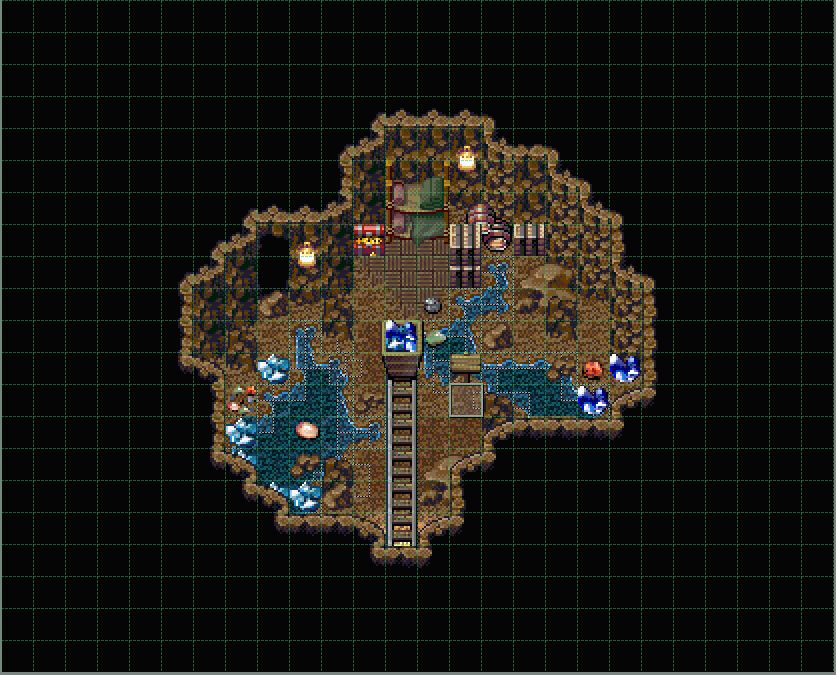
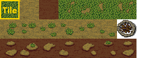
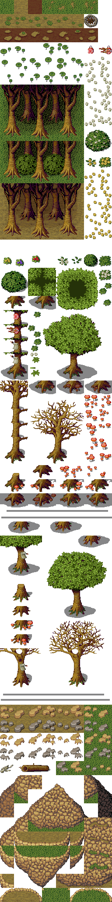
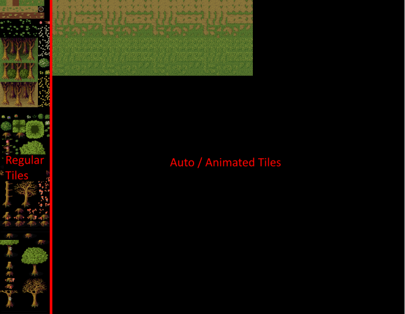
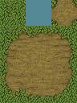
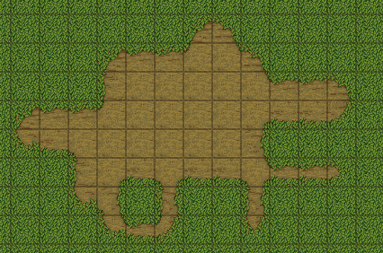
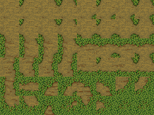

瓦片地图
瓦片地图瓦片地图是冒险、横版卷轴或策略类游戏中常见的元素。它用于显示当前关卡的场景，例如：

上面的瓦片地图是从上面看到的，主要在复古 RPG 中使用。但您也可以使用其他变体，例如等距或侧视图。
瓦片地图由 gs.Tilemap 类表示。它们也被视为图形对象，因此可以进行旋转、缩放等操作。
瓦片集
瓦片地图由瓦片集（也称为瓦片表）构建。瓦片集是一个单一的图像文件，包含构建游戏瓦片地图/关卡所需的图形，也称为“瓦片”。它与精灵表非常相似。

正如您所见，黄色标记的图形称为“瓦片”。在本例中，所有瓦片的大小均为 32x32 像素且为方形。如果我们将在屏幕上的 32x32 像素网格上放置这些瓦片，我们就可以构建一个关卡。
设置简单的瓦片地图
让我们从一个非常简单的瓦片地图开始。我们将使用以下瓦片集来构建瓦片地图：

将此瓦片集图像导入到您项目的 Graphics/Pictures 文件夹中，并将其重命名为“WoodsTileset”。然后使用以下代码作为您的测试平台场景。
# ===================================================================
#
# 脚本：Component_TestBedBehavior
#
# 在此处输入您的姓名
#
# ===================================================================
class Component_TestBedBehavior extends gs.Component_SceneBehavior
###*
* 一个测试平台场景行为。在这里，您可以玩转 Visual Novel Maker 的
* 游戏引擎，以更好地了解所有内容。
###
constructor: ->
super
# 定义资源上下文属性
@resourceContext = null
###*
* 初始化场景。
###
initialize: ->
super
# 创建一个新的资源上下文
@resourceContext = ResourceManager.createContext()
# 设置当前对象管理器
gs.ObjectManager.current = SceneManager
#将其设置为当前资源上下文
ResourceManager.context = @resourceContext
###*
* 销毁场景。
###
dispose: ->
super
###*
* 准备场景的所有视觉游戏对象。
###
prepareVisual: ->
# 创建瓦片地图
@tilemap = new gs.Tilemap(Graphics.viewport)
# 分配瓦片集位图
@tilemap.tileset = ResourceManager.getBitmap("Graphics/Pictures/WoodsTileset")
# 设置瓦片地图的宽度（以瓦片为单位）
@tilemap.width = 100
# 设置瓦片地图的高度（以瓦片为单位）
@tilemap.height = 100
# 设置瓦片地图层数。
@tilemap.depth = 1
# 设置单个瓦片的大小为 32x32。仅支持方形瓦片。
@tilemap.tileSize = 32
# 初始化地图数据数组
@tilemap.mapData = []
# 初始化 Z 顺序数组
@tilemap.priorities = []
# 填充地图数据。瓦片号 0 指的是瓦片集左上角的瓦片。
for i in [0...(@tilemap.width * @tilemap.height)]
# 设置瓦片号 0
@tilemap.mapData[i] = 0
# 初始化瓦片地图
@tilemap.setup()
# 在过渡之前更新瓦片地图，使其平滑淡入。
@tilemap.update()
# 我们已经完成了视觉对象的准备工作。因此，我们可以开始
# 屏幕过渡，使我们新创建的对象平滑淡入。
@transition()
###*
* 准备场景的所有数据并加载必要的图形和音频资源。
###
prepareData: ->
# 加载瓦片集图像
ResourceManager.getBitmap("Graphics/Pictures/WoodsTileset")
###*
* 更新场景内容。
###
updateContent: ->
# 更新瓦片地图
@tilemap.update()
gs.Component_LayoutSceneBehavior = Component_TestBedBehavior
如果我们现在测试游戏，我们将看到一个瓦片地图显示出一片广阔的草原。
让我们来看看上面的代码。首先，我们创建一个 gs.Tilemap 实例，并将其分配给我们的瓦片集位图。接下来，我们将地图大小设置为 100x100 瓦片，以便我们的瓦片地图将在屏幕上显示一个 100x100 的瓦片网格，每个单元格 32x32 像素。由于单个瓦片默认大小为 32x32 像素，因此地图的像素尺寸为 100 * 32 = 3200x3200 像素。
接下来，我们需要设置地图数据。地图数据控制着瓦片集中哪种瓦片在屏幕上的网格单元中显示。因此，地图数据本身是一个大小与地图相同的数组，并为每个单元格存储一个数字，该数字也称为瓦片 ID，它指向瓦片集中的一个瓦片。我们将每个单元格设置为 0，这指向我们瓦片集中的左上角草地瓦片。
设置完地图数据后，我们必须调用 setup 方法来初始化瓦片地图。我们也在之后直接调用 update 方法，以确保瓦片地图在开始过渡之前就已经渲染，以确保我们获得从黑色到瓦片地图的平滑过渡。只需删除该行即可查看会发生什么。
动画瓦片
在最后一个例子中，我们使用常规瓦片集显示了一个简单的瓦片地图。但如果我们想使用动画瓦片来制作海洋、大海或河流等区域呢？这就是 gs.Tilemap 也支持动画瓦片的原因。
要使用动画瓦片，我们必须告诉 gs.Tilemap 动画瓦片在我们的瓦片集中的位置以及它们应该如何动画。

红色粗线右边的所有内容都将被视为动画瓦片。默认情况下，该红线设置为 8 个瓦片。因此，您将红线向右移动得越多，您获得的常规瓦片空间就越多。但作为交换，动画瓦片的动画帧就更少，因为动画帧是从左到右排列的。
所以上面的例子有 64 个不同的动画瓦片（从上到下）的空间，每个动画瓦片最多有 56 个动画帧（从左到右）。这似乎太大的空间了，但如果您开始使用自动瓦片和动画自动瓦片（我们将在本课稍后学习），您就会发现有时这个空间是必要的。
如果您根本不需要动画或特殊瓦片，您可以将红线完全移到右边。然后您瓦片集中的所有瓦片都将被视为常规瓦片。查看 gs.TilesetConfiguration 类以了解更多关于如何配置瓦片集和动画瓦片的信息。
默认情况下，如果您的瓦片集符合 8xN 瓦片格式（即每行 8 个瓦片），则无需进行任何配置。瓦片集可以有无限行的瓦片，但当然，行数越多，图像越大，需要的图形内存越多。请记住，对于许多普通的移动设备，最大图像尺寸为 2048x2048。
自动链接瓦片集
在第一个例子中，我们使用常规瓦片集在屏幕上显示了一个简单的瓦片地图。但还有一种额外的瓦片集叫做“自动链接瓦片集”或简称“自动瓦片”，有时也称为“地形瓦片集”。自动瓦片是一个非常小的瓦片集，它只包含一种瓦片类型，但可以构建不同的图案。

上面的例子显示了用于映射如下所示的泥土区域的泥土自动瓦片：

如果您尝试使用常规瓦片绘制出上面这样的更自然的泥土，您将在瓦片集中需要大量不同的泥土瓦片。此外，您还需要在地图编辑器中逐个手动放置它们。随着时间的推移，这可能会变得非常累人。为了解决这个问题，自动瓦片就派上用场了。
它是如何工作的？在运行时，自动瓦片会被“展开”，并输出至少 48 种不同的图案。这允许您创建自然的泥土斑块。展开的自动瓦片看起来像这样：

具有自动瓦片或地形瓦片支持的地图编辑器可以轻松绘制泥土、草地、河流等地形。您只需选择泥土自动瓦片并在地图上“绘制”，然后自动计算出泥土的形状。编辑器会自动为您选择正确的瓦片！
所以自动瓦片是生活质量（QoL）功能，使地图绘制更容易。您不再需要手动选择正确的瓦片，因此这是一项功能，您只能在地图编辑器中的设计/绘制时才能感受到。这意味着如果我们像第一个例子那样硬编码生成我们的瓦片地图数据，我们就无法感受到它的真正优势。由于引擎，它们只是普通瓦片，魔力发生在地图编辑器端。最好的办法是您自己尝试一下，比如在Tiled Map Editor这样的地图编辑器中。
VN Maker 的基本引擎附带 gs.AutotileExpander 类，该类允许您轻松地以上述格式展开自动瓦片。通过将自动瓦片的展开版本从左到右放置在瓦片集的动画瓦片区域中，也可以使其动画化。然后，您只需配置更大的动画偏移值即可使其动画化。有关更多信息，请查看 gs.TilesetConfiguration 类。
限制
在屏幕上显示瓦片地图，包括自动瓦片和动画瓦片以及其他功能，可能需要时间，具体取决于渲染技术以及使用的设备/硬件。
现代 PC/Mac 在大多数情况下，无论使用何种渲染技术，都不会有问题地显示瓦片地图。但对于智能手机等移动平台，差别很大，因为在撰写本文时，大多数普通智能手机都有不错的 GPU，但带宽非常低，这意味着在一个游戏帧中可以传输到 GPU 的数据量非常少。
这就是为什么 VN Maker 的瓦片地图渲染针对低带宽设备进行了高度优化。不幸的是，这种优化存在一些小限制：
为了获得最佳使用效果，可以配置瓦片地图以满足您的需求。可以更改以下参数：